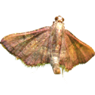
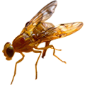

幼虫具长毛，中、后胸有毒毛。末龄幼虫体长47～100毫米。体色有棕红、灰黑、黑褐、烟黑、灰褐等色，花斑明显成不明显，两侧有长毛，全体满布白、黑、棕色长毛或短毛。
应用苏云金杆菌防治松毛虫，一般防治3~4龄幼虫。施药林分适宜温度为20~32˚C。施菌量每亩40～80万国际单位（IU）。多雨季节慎用。
在中国，林业上最严重的害虫当属鳞翅目枯叶蛾科松毛虫属 Dendrolimus 昆虫，其中以马尾松毛虫指名亚种 Dendrolimu punctatus punctatus Walker、赤松毛虫 D .punctatus spectabilis Butler、落叶松毛虫 D .superans Butler、云南松毛虫 D .houi Lajonquiere、思茅松毛虫 D . kikuchii Matsumura 为典型代表，给林业生产造成重大的经济损失 。